027 — VPC, subredes, rutas, NAT, endpoints y seguridad
Parte: 02 — AWS: plataforma esencial
Nivel: intermedio · Horas estimadas: 4
Laboratorio: network · Estado: EXECUTABLE_CORE
🎯 Propósito
Diseñar una VPC entendiendo qué componente decide cada cosa: la tabla de rutas determina por dónde sale el tráfico, el grupo de seguridad quién puede hablar, y la elección entre NAT y endpoint decide una partida de la factura que suele sorprender. Es la base de las clases 028 a 036 y el origen de la mayoría de incidentes de conectividad del programa.
📚 Resultados de aprendizaje
Al finalizar podrás:
- Planificar un rango CIDR que admita crecimiento y no colisione con la red corporativa ni con futuros pares.
- Determinar si una subred es pública o privada por su tabla de rutas, no por su nombre.
- Elegir entre grupo de seguridad y ACL de red sabiendo cuál tiene estado y cuál no.
- Calcular el ahorro de sustituir tráfico por NAT gateway por endpoints de VPC.
- Diagnosticar un fallo de conectividad recorriendo las capas en orden y con los registros de flujo.
🧩 Conceptos centrales
| Concepto | Comprensión verificable |
|---|---|
tabla de rutas |
Conjunto de reglas que decide por dónde sale el tráfico de una subred. Es lo único que hace pública a una subred: una ruta hacia una puerta de enlace de internet. |
grupo de seguridad |
Cortafuegos con estado a nivel de interfaz de red. Solo tiene reglas de permiso y la respuesta al tráfico permitido vuelve automáticamente, sin regla de salida que la autorice. |
ACL de red |
Cortafuegos sin estado a nivel de subred. Admite denegaciones explícitas, y al no tener estado exige regla de vuelta para los puertos efímeros. |
NAT gateway |
Servicio que permite salida a internet desde subredes privadas. Cobra por hora y por GB procesado, lo que lo convierte en una de las partidas más caras y menos vigiladas. |
endpoint de VPC |
Ruta privada hacia un servicio de AWS sin pasar por internet. Los de tipo gateway —S3 y DynamoDB— son gratuitos; los de interfaz cobran por hora y por GB, pero menos que el NAT. |
🧠 Modelo mental
Una cuenta AWS es una frontera de seguridad y facturación; los servicios se combinan mediante contratos, no como una lista de productos aislados.
Aplicado a esta clase, separa siempre cuatro planos: intención (qué necesita el usuario), configuración (qué declaramos), estado observado (qué existe de verdad) y evidencia (cómo sabemos que cumple). Confundirlos produce diseños que se ven correctos en un diagrama pero fallan al operar.
🗺️ Flujo de razonamiento

📖 Desarrollo
1. Planificar el CIDR antes de crear nada
El rango de una VPC no se puede cambiar; solo se pueden añadir bloques secundarios, con restricciones. Un error aquí se paga durante años.
Tres reglas que evitan los problemas más caros:
1. No solapar con nada con lo que puedas necesitar hablar. Si la red corporativa usa 10.0.0.0/8 y creas la VPC en 10.0.0.0/16, la VPN o el emparejamiento serán imposibles: el enrutamiento no admite solapamiento. Un registro central de rangos asignados es más barato que una migración.
2. Dimensionar con holgura. AWS admite de /16 a /28. Un /16 da 65.536 direcciones y no cuesta nada reservarlo; un /24 se agota en cuanto se añaden zonas o servicios que consumen direcciones.
3. Contar las direcciones que AWS reserva. En cada subred se reservan 5, no 2:
Subred 10.20.1.0/24 → 256 direcciones teóricas
.0 dirección de red
.1 puerta de enlace de la VPC
.2 servidor DNS
.3 reservada para uso futuro
.255 difusión
------------------------------
251 direcciones utilizables
Un esquema que crece sin colisiones:
VPC produccion 10.20.0.0/16
pública zona a 10.20.0.0/20 4.091 utilizables
pública zona b 10.20.16.0/20
privada zona a 10.20.32.0/20
privada zona b 10.20.48.0/20
aislada zona a 10.20.64.0/20
aislada zona b 10.20.80.0/20
libre 10.20.96.0/19 reservado para crecer
El bloque libre al final no es desperdicio: es lo que permite añadir una tercera zona sin rehacer el esquema.
2. Pública o privada lo decide la tabla de rutas
Los nombres «pública» y «privada» son convención humana. Lo único que hace pública a una subred es una ruta hacia una puerta de enlace de internet:
Subred pública 0.0.0.0/0 → igw-xxxx
Subred privada 0.0.0.0/0 → nat-xxxx
Subred aislada sin ruta hacia 0.0.0.0/0
De ahí un fallo que aparece con regularidad: una subred llamada «privada» con ruta al IGW es pública, y cualquier recurso con IP pública en ella es accesible desde internet. El nombre no protege nada.
La comprobación es directa:
$ aws ec2 describe-route-tables \
--filters Name=association.subnet-id,Values=subnet-0a1b2c \
--query 'RouteTables[0].Routes[?DestinationCidrBlock==`0.0.0.0/0`].GatewayId' --output text
igw-0f9e8d # es PÚBLICA, se llame como se llame
Y hay una segunda condición para que una instancia sea alcanzable desde internet: necesita IP pública además de la ruta. Una instancia sin IP pública en una subred pública no es accesible desde fuera, aunque sí puede salir si hay NAT.
La tercera categoría —aislada, sin ruta a internet en absoluto— es donde deben vivir las bases de datos. No es lo mismo que privada: una subred privada puede iniciar conexiones salientes a internet a través del NAT, y eso es exactamente lo que usa un atacante para exfiltrar datos o descargar herramientas.
3. Grupo de seguridad y ACL: con estado y sin estado
La diferencia decisiva:
| Grupo de seguridad | ACL de red | |
|---|---|---|
| Ámbito | Interfaz de red | Subred entera |
| Estado | Con estado | Sin estado |
| Reglas | Solo permitir | Permitir y denegar |
| Evaluación | Todas las reglas | Por orden de número |
| Referencia a otro grupo | Sí | No, solo CIDR |
Con estado significa que la respuesta al tráfico permitido vuelve automáticamente. Si un grupo permite entrada al 443, la respuesta sale sin necesidad de regla de salida.
Sin estado significa que hay que autorizar ambos sentidos. Este es el error clásico de las ACL:
ACL con entrada 443 permitida y salida solo 443:
petición entrante al 443 ✓ permitida
respuesta desde el 443 hacia el
puerto efímero del cliente (52341) ✗ BLOQUEADA
La conexión se establece y se cuelga. Hay que permitir la salida hacia el rango efímero 1024-65535, y es la causa habitual de que «el firewall parece bien configurado y no funciona».
La capacidad de referenciar otro grupo de seguridad en vez de un CIDR es lo que hace mantenible el diseño:
$ aws ec2 authorize-security-group-ingress --group-id sg-db \
--protocol tcp --port 5432 --source-group sg-app
Esto dice «lo que esté en sg-app puede hablar con la base de datos», y sigue siendo cierto cuando las instancias cambian de IP, se escalan o se sustituyen. Un CIDR fijo exige mantenimiento cada vez que la topología cambia.
La recomendación práctica: grupos de seguridad para casi todo, ACL solo para denegaciones amplias —bloquear un rango de IP concreto—, porque su falta de estado las hace fáciles de configurar mal.
4. NAT gateway: la partida cara que nadie mira
Un NAT gateway cobra dos veces: por hora de existencia y por GB procesado. La segunda es la que sorprende.
precio por hora ~0,045 USD → 32,85 USD/mes
precio por GB procesado ~0,045 USD
Con 8 TB mensuales de tráfico saliente hacia servicios de AWS:
8.000 GB × 0,045 = 360 USD/mes solo de procesamiento
más 32,85 de la hora, por cada NAT
con un NAT por zona (3 zonas): 98,55 + 360 = 458,55 USD/mes
Y lo importante: buena parte de ese tráfico no necesita salir a internet. Descargar imágenes de ECR, leer secretos, escribir logs o hablar con S3 son llamadas a servicios de AWS que un endpoint resuelve por la red interna.
```text coste por GB tráfico por NAT gateway 0,045 USD tráfico por endpoint de interfaz 0,010 USD tráfico por endpoint gateway 0,000 USD ← S3 y DynamoDB
El endpoint **gateway** es gratuito y se instala como una ruta en la tabla; no tener uno para S3 es dinero regalado sin ninguna contrapartida. El de **interfaz** cuesta 0,01 USD por hora por zona más 0,01 por GB, así que compensa a partir de un volumen modesto:
```text
umbral del endpoint de interfaz (1 zona):
7,30 USD/mes de coste fijo / (0,045 − 0,010) USD/GB ≈ 209 GB/mes
Por encima de ~209 GB mensuales hacia ese servicio, el endpoint sale más barato. Y además del ahorro, aporta seguridad: el tráfico no sale de la red de AWS, lo que permite subredes aisladas que hablan con los servicios que necesitan sin ninguna ruta a internet.
5. Diagnóstico de conectividad, de abajo hacia arriba
El orden ahorra horas porque cada paso descarta una capa completa:
# 1. ¿Existe ruta hacia el destino?
$ aws ec2 describe-route-tables --filters Name=association.subnet-id,Values=subnet-xxx \
--query 'RouteTables[0].Routes[].[DestinationCidrBlock,GatewayId,NatGatewayId]' --output text
# 2. ¿Lo permite la ACL de la subred, en AMBOS sentidos?
$ aws ec2 describe-network-acls --filters Name=association.subnet-id,Values=subnet-xxx \
--query 'NetworkAcls[0].Entries[?RuleNumber<`32767`]'
# 3. ¿Lo permite el grupo de seguridad de origen y el de destino?
$ aws ec2 describe-security-groups --group-ids sg-app sg-db \
--query 'SecurityGroups[].[GroupId,IpPermissions[].FromPort]'
# 4. Analizador de accesibilidad: evalúa la ruta completa
$ aws ec2 create-network-insights-path --source i-origen --destination i-destino \
--protocol tcp --destination-port 5432
$ aws ec2 start-network-insights-analysis --network-insights-path-id nip-xxx
El paso 4 es el más rentable y el menos usado: evalúa la configuración completa y dice qué componente bloquea, sin necesidad de tráfico real.
Y cuando la configuración parece correcta pero algo falla, los registros de flujo dan el veredicto:
$ aws logs filter-log-events --log-group-name /aws/vpc/flowlogs \
--filter-pattern '[version, account, eni, source, destination, srcport,
destport=5432, protocol, packets, bytes, start, end,
action=REJECT, status]' --max-items 5
Un REJECT indica que una regla lo bloqueó y hay que revisar grupos y ACL. La ausencia total de registros es un diagnóstico distinto y más útil: significa que el paquete nunca llegó a la interfaz, así que el problema está en enrutamiento o resolución de nombres, no en el firewall.
🔬 Ejemplo trabajado
La factura de red de CloudShop es de 1.180 USD/mes y nadie sabe explicarla. Además, la base de datos está en una subred llamada «privada». Se auditan ambas cosas.
Parte 1 — de dónde viene el gasto:
$ aws ce get-cost-and-usage --time-period Start=2026-07-01,End=2026-08-01 \
--granularity MONTHLY --metrics UnblendedCost \
--filter '{"Dimensions":{"Key":"USAGE_TYPE_GROUP","Values":["EC2: NAT Gateway"]}}' \
--query 'ResultsByTime[0].Total.UnblendedCost.Amount' --output text
842.31
842 USD de 1.180 son NAT gateway. Se desglosa qué tráfico lo atraviesa con los registros de flujo:
destino GB/mes % del tráfico por NAT
S3 (misma región) 9.140 49 %
ECR (descarga de imágenes) 4.620 25 %
Secrets Manager y SSM 310 2 %
CloudWatch Logs 1.850 10 %
internet real (APIs de terceros) 2.680 14 %
------
total 18.600 GB
El 86 % del tráfico que paga NAT no va a internet: va a servicios de AWS de la misma región.
Cálculo del cambio a endpoints:
actual
3 NAT × 32,85 USD/mes de hora = 98,55
18.600 GB × 0,045 USD = 837,00
--------
935,55
con endpoints
gateway S3 (gratis) 9.140 GB → 0,00
interfaz ECR 3 zonas × 7,30 + 4.620 × 0,010 = 68,10
interfaz Secrets+SSM 2 svc × 3 × 7,30 + 310 × 0,010 = 46,90
interfaz Logs 3 × 7,30 + 1.850 × 0,010 = 40,40
NAT solo para internet real
3 × 32,85 + 2.680 × 0,045 = 219,15
--------
374,55
ahorro: 935,55 − 374,55 = 561 USD/mes (−60 %)
Se verifica el umbral antes de crear cada endpoint de interfaz, para no añadir coste fijo sin retorno:
Secrets Manager: 310 GB/mes
coste fijo 3 zonas: 21,90 USD
ahorro por GB: 310 × (0,045 − 0,010) = 10,85 USD
→ NO compensa por volumen, pero SÍ por seguridad: permite que la subred
aislada lea secretos sin ninguna ruta a internet. Se crea igualmente,
con el sobrecoste de 11 USD/mes declarado como decisión de seguridad.
Parte 2 — la subred «privada» de la base de datos:
$ aws ec2 describe-route-tables \
--filters Name=association.subnet-id,Values=subnet-0db1 \
--query 'RouteTables[0].Routes[].[DestinationCidrBlock,GatewayId,NatGatewayId]' --output text
10.20.0.0/16 local None
0.0.0.0/0 None nat-0a7f
No es pública —sale por NAT, no por IGW— pero sí puede iniciar conexiones salientes a internet. Para una base de datos eso es un camino de exfiltración que no aporta nada:
$ aws ec2 create-route-table --vpc-id vpc-0c1d --tag-specifications \
'ResourceType=route-table,Tags=[{Key=Name,Value=aislada}]'
# sin ruta 0.0.0.0/0; solo local y los endpoints necesarios
$ aws ec2 associate-route-table --route-table-id rtb-nueva --subnet-id subnet-0db1
Prueba negativa desde la instancia de base de datos:
$ curl -m 5 https://example.com
curl: (28) Connection timed out ✓ sin salida a internet
$ aws secretsmanager get-secret-value --secret-id cloudshop/db --query Name
"cloudshop/db" ✓ sigue accediendo por endpoint
Resultado:
```text antes después coste de red 1.180 USD 619 USD (−48 %) tráfico por NAT 18.600 GB 2.680 GB salida a internet desde la BD sí no endpoints 0 5
**El diagnóstico no fue de red sino de rutas.** El 86 % del gasto venía de que todo el tráfico interno salía por un componente pensado para internet, y la base de datos tenía un camino de salida que nadie había decidido darle: lo heredó de la tabla de rutas por defecto.
## 🧪 Laboratorio guiado
Ejecuta desde la raíz:
```bash
python classes/part-02-aws-core-platform/027-vpc-subredes-rutas-nat-endpoints-y-seguridad/lab.py
El laboratorio selecciona el motor de práctica network y produce
lab_result.json. El escenario, sus comprobaciones y el artefacto esperado corresponden a
esta clase; no requiere credenciales y deja explícito qué debe revalidarse en un sandbox real.
- Lee
exercise.stepsy formula una predicción antes de ejecutar. - Ejecuta la práctica y verifica todos los elementos de
checks. - Provoca el caso de
negative_testy explica la señal observada. - Materializa
vpc-awsenevidence/usando la plantilla indicada. - Para proveedor real, sigue
sandbox.requires, registra costo y ejecutadestroy.
Evidencia esperada
El artefacto principal es una topología con rutas, puertos y controles. Además, la entrega debe incluir el comando ejecutado, la salida estructurada y una conclusión que no exceda lo observado.
🏆 Reto verificable
Construye vpc-aws para el caso CloudShop. Incluye una alternativa descartada,
un supuesto que pueda falsarse, una prueba de fallo y una decisión de rollback.
✅ Criterio de aceptación
- [ ]
lab.pytermina con código 0 y genera JSON válido. - [ ] La entrega conecta al menos tres requisitos con mecanismos verificables.
- [ ] Existe una prueba positiva y una prueba negativa con evidencia.
- [ ] Seguridad, costo y operación aparecen como decisiones, no como anexos.
- [ ] Se declara una limitación y una condición que obligaría a revisar el diseño.
- [ ] Otra persona puede repetir el recorrido sin conocimiento tácito.
⚠️ Errores frecuentes
| Síntoma | Causa probable | Corrección |
|---|---|---|
| Una subred llamada «privada» resulta accesible desde internet | Su tabla de rutas apunta a la puerta de enlace de internet: el nombre no decide nada | Verifica la ruta 0.0.0.0/0; pública, privada y aislada se distinguen solo por ahí. |
| Una conexión se establece y se cuelga pese a que el firewall permite el puerto | La ACL de red no tiene estado y falta permitir la vuelta por el rango efímero | Autoriza 1024-65535 en el sentido de retorno, o usa grupos de seguridad, que sí tienen estado. |
| La factura de NAT gateway es la mayor partida de red | El tráfico hacia servicios de AWS de la misma región atraviesa el NAT y paga 0,045 USD/GB | Endpoint gateway para S3 y DynamoDB (gratis) y de interfaz por encima de ~209 GB/mes. |
| No se puede ampliar el rango de la VPC ni emparejar con la red corporativa | El CIDR se solapa y no se puede cambiar tras la creación | Planifica el rango contra un registro central antes de crear nada; deja bloques libres para crecer. |
| Una base de datos puede iniciar conexiones salientes a internet | Está en subred privada con ruta al NAT, heredada de la tabla por defecto | Usa subred aislada sin ruta a 0.0.0.0/0 y endpoints para lo que necesite; verifica con prueba negativa. |
🛡️ Seguridad, ética y costo
Trabaja con cuentas propias o sandboxes autorizados. No publiques secretos, identificadores reales ni datos personales. Antes de crear recursos pagos define presupuesto, etiquetas y comando de destrucción; después verifica que no queden recursos huérfanos. Los ejemplos locales enseñan contratos, pero no certifican cumplimiento ni disponibilidad de producción.
❓ Preguntas de comprobación
- ¿Cuántas direcciones utilizables tiene una subred
/24en AWS y por qué no son 254? - ¿Qué convierte a una subred en pública, y basta con eso para que una instancia sea alcanzable desde internet?
- Una ACL permite entrada al 443 y salida solo por el 443. ¿Qué ocurre y por qué?
- A partir de cuántos GB mensuales compensa un endpoint de interfaz frente al NAT, y de dónde sale ese número?
- Los registros de flujo no muestran ninguna entrada para una conexión fallida. ¿Qué te dice eso frente a un REJECT?
🔗 Referencias
- AWS (2024). VPC user guide: subnets and routing — direcciones reservadas y tablas de rutas. https://docs.aws.amazon.com/vpc/latest/userguide/configure-subnets.html
- AWS (2024). Compare security groups and network ACLs — con estado frente a sin estado. https://docs.aws.amazon.com/vpc/latest/userguide/infrastructure-security.html
- AWS (2024). AWS PrivateLink and VPC endpoints — tipos de endpoint, precios y restricciones. https://docs.aws.amazon.com/vpc/latest/privatelink/what-is-privatelink.html
- AWS (2024). VPC Flow Logs — formato de registro y campos para diagnóstico. https://docs.aws.amazon.com/vpc/latest/userguide/flow-logs.html
- AWS (2024). Reachability Analyzer — análisis estático de la ruta entre dos recursos. https://docs.aws.amazon.com/vpc/latest/reachability/what-is-reachability-analyzer.html
- Documentación oficial vigente del servicio implementado; registra URL y fecha de consulta.
📥 Descargar: Parte 02 en PDF · Recorrido de AWS en PDF · Manual integral